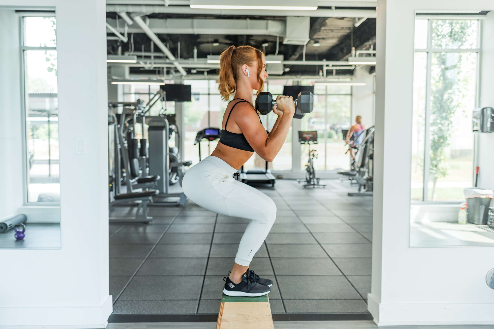

7 Surprising Benefits of Exercise

'Y'ou probably have a vague sense that exercise is good for you—and you’ve probably heard that it’s
“healthy for the
heart.” But if you’re like most people, that’s not enough motivation to get you to break a sweat
with any regularity. As
I report in the TIME cover story, “The Exercise Cure,” only 20% of Americans get the recommended 150
minutes of strength
and cardiovascular physical activity per week, more than half of all baby boomers report doing no
exercise whatsoever,
and 80.2 million Americans over age 6 are entirely inactive.
That’s bad news, but emerging evidence shows that there are plenty of compelling reasons to start
moving at any age and
even if you’re ill or pregnant. Indeed, scientists are learning that exercise is, actually,
medicine. “There is no pill
that comes close to what exercise can do,” says Claude Bouchard, director of the human genomics
laboratory at Pennington
Biomedical Research Center in Louisiana. “And if there was one, it would be extremely expensive.”
You can read the whole story for more, but here are some of the amazing things that happen to a body
in motion.
1. Exercise is great for your brain.
It’s linked to less depression, better memory and quicker learning. Studies also suggest that exercise is, as of now, the best way to prevent or delay the onset of Alzheimer’s disease, a major fear for many Americans. Scientists don’t know exactly why exercise changes the structure and function of the brain, but it’s an area of active research. So far, they’ve found that exercise improves blood flow to the brain, feeding the growth of new blood vessels and even new brain cells, thanks to the protein BDNF (brain-derived neurotrophic factor). BDNF triggers the growth of new neurons and helps repair and protect brain cells from degeneration. It may also help people focus, according to recent research.
2. You might get happier.
Countless studies show that many types of exercise, from walking to cycling, make people feel better and can even relieve symptoms of depression. Exercise triggers the release of chemicals in the brain—serotonin, norepinephrine, endorphins, dopamine—that dull pain, lighten mood and relieve stress. “For years we focused almost exclusively on the physical benefits of exercise and really have ignored the psychological and emotional benefits of being regularly active,” says Cedric Bryant, chief science officer of the American Council on Exercise.
3. It might make you age slower.
Exercise has been shown to lengthen lifespan by as much as five years. A small new study suggests that moderate-intensity exercise may slow down the aging of cells. As humans get older and their cells divide over and over again, their telomeres—the protective caps on the end of chromosomes—get shorter. To see how exercise affects telomeres, researchers took a muscle biopsy and blood samples from 10 healthy people before and after a 45-minute ride on a stationary bicycle. They found that exercise increased levels of a molecule that protects telomeres, ultimately slowing how quickly they shorten over time. Exercise, then, appears to slow aging at the cellular level.
4. It’ll make your skin look better.
Aerobic exercise revs up blood flow to the skin, delivering oxygen and nutrients that improve skin health and even help wounds heal faster. “That’s why when people have injuries, they should get moving as quickly as possible—not only to make sure the muscle doesn’t atrophy, but to make sure there’s good blood flow to the skin,” says Anthony Hackney, an exercise physiologist at the University of North Carolina at Chapel Hill. Train long enough, and you’ll add more blood vessels and tiny capillaries to the skin, too. The skin also serves as a release point for heat. (See “Why Does My Face Turn Red When I Exercise?” for more on that.) When you exercise, your muscles generate a lot of heat, which you have to give up to the environment so your body temperature doesn’t get too high, Hackney says. The heat in the muscle transfers to the blood, which shuttles it to the skin; it can then escape into the atmosphere.
5. Amazing things can happen in just a few minutes.
Emerging research suggests that it doesn’t take much movement to get the benefits. “We’ve been interested in the question of, How low can you go?” says Martin Gibala, an exercise physiologist at McMaster University in Ontario. He wanted to test how effective a 10-minute workout could be, compared to the typical 50-minute bout. The micro-workout he devised consists of three exhausting 20-second intervals of all-out, hard-as-you-can exercise, followed by brief recoveries. In a three-month study, he pitted the short workout against the standard one to see which was better. To his amazement, the workouts resulted in identical improvements in heart function and blood-sugar control, even though one workout was five times longer than the other. “If you’re willing and able to push hard, you can get away with surprisingly little exercise,” Gibala says.
6. It can help you recover from a major illness.
Even very vigorous exercise—like the interval workouts Gibala is studying—can, in fact, be appropriate for people with different chronic conditions, from Type 2 diabetes to heart failure. That’s new thinking, because for decades, people with certain diseases were advised not to exercise. Now scientists know that far more people can and should exercise. A recent analysis of more than 300 clinical trials discovered that for people recovering from a stroke, exercise was even more effective at helping them rehabilitate. Dr. Robert Sallis, a family physician at Kaiser Permanente Fontana Medical Center in California, has prescribed exercise to his patients since the early 1990s in hopes of doling out less medication. “It really worked amazingly, particularly in my very sickest patients,” he says. “If I could get them to do it on a regular basis—even just walking, anything that got their heart rate up a bit—I would see dramatic improvements in their chronic disease, not to mention all of these other things like depression, anxiety, mood and energy levels.”
7. Your fat cells will shrink.
The body uses both carbohydrates and fats as energy sources. But after consistent aerobic exercise training, the body gets better at burning fat, which requires a lot of oxygen to convert it into energy. “One of the benefits of exercise training is that our cardiovascular system gets stronger and better at delivering oxygen, so we are able to metabolize more fat as an energy source,” Hackney says. As a result, your fat cells—which produce the substances responsible for chronic low-grade inflammation—shrink, and so does inflammation.
People Also Read:


Fitness Advice That Doesn't Work
‘Ignore bad fitness advice to make the most out of your time at the gym.”
The Mental Health Benefits of Exercise
‘Exercise is not just about aerobic capacity and muscle size. Sure, exercise can improve your physical health and your physique,’
Why Exercise Is Wise
You've probably heard countless times how exercise is "good for you." But did you know that it can help you feel good too?’
Bite-sized exercise breaks
Exercise snacking differs from HIIT in both the duration of the activity burst and the time in between.’